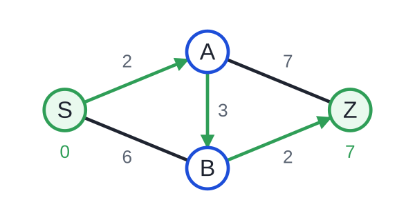

Überblick › LB 2/3 Datenstrukturen
3.9 Kürzeste Wege: Moore und Dijkstra
Du gibst im Navi „Hauptbahnhof Dresden“ ein, und nach Sekundenbruchteilen steht die schnellste Route fest – obwohl das Straßennetz Hunderttausende Kreuzungen hat. Dahinter steckt das Kürzeste-Wege-Problem: In einem gewichteten Graphen soll ein Weg mit minimaler Summe der Kantengewichte gefunden werden.
Schritt 1: Algorithmus von Moore (Bellman-Ford)
Erläuterung: Der Algorithmus von Moore – meist als Bellman-Ford- oder Moore-Bellman-Ford-Algorithmus bezeichnet – löst das Kürzeste-Wege-Problem von einem Startknoten aus. Er kann mit negativen Gewichten umgehen, solange keine negativen Zyklen existieren. Negative Gewichte ergeben nur in gerichteten Graphen Sinn: In einem ungerichteten Graphen wäre jede negative Kante u–v schon ein negativer Zyklus (u → v → u), und der „kürzeste Weg“ wäre beliebig kurz.
Schritt-für-Schritt-Anleitung:
- Setze die Distanzen zu allen Knoten auf unendlich, nur die Distanz des Startknotens auf 0.
- Relaxiere alle Kanten (in einer festen Reihenfolge).
- Wiederhole Schritt 2 höchstens (Anzahl der Knoten − 1)-mal. Ändert sich in einer Runde nichts mehr, kann man vorzeitig aufhören.
- Ändert sich in einer weiteren n-ten Runde noch eine Distanz, enthält der Graph einen negativen Zyklus.
Kurz geprüft 1: Eine Runde Moore AFB I
Ein gerichteter Graph hat die Kanten S→A (3), S→B (5) und B→A (−4). Relaxiere in Runde 1 in dieser Reihenfolge: S→A, S→B, B→A. Gib nach Runde 1 für A und B „Distanz / Vorgänger“ an. Ändert sich in Runde 2 noch etwas?
Lösung zeigen
S→A: A = 3 / S. S→B: B = 5 / S. B→A: 5 + (−4) = 1 < 3, also A = 1 / B. In Runde 2 ändert sich nichts mehr – fertig. Kürzester Weg nach A: S → B → A mit Länge 1.
Weiter mit Schritt 2: Dijkstra an einem Beispiel →
Schritt 2: Dijkstra-Algorithmus an einem Beispiel
Erläuterung: Der Algorithmus von Edsger W. Dijkstra (1959) findet in einem gewichteten Graphen mit nichtnegativen Kantengewichten die kürzesten Wege von einem Startknoten zu allen anderen Knoten. Er nutzt eine Greedy-Strategie: Es wird stets der Knoten mit der geringsten vorläufigen Distanz als Nächstes endgültig festgelegt.

Hinweis: Greedy-Algorithmen
Die Greedy-Strategie („gierig“) ist ein algorithmisches Paradigma, das ein Problem durch eine Folge von Entscheidungen löst, bei der in jedem Schritt die lokal beste Wahl getroffen wird (z. B. der Knoten mit der kleinsten Distanz). Frühere Entscheidungen werden nie zurückgenommen. Das führt nicht bei jedem Problem zum Optimum; bei Dijkstra mit nichtnegativen Gewichten aber schon, denn ein Umweg kann dann nie kürzer werden als die bereits kleinste Distanz.
Schritt-für-Schritt-Anleitung:
- Setze die Distanz des Startknotens auf 0 und die aller anderen Knoten auf unendlich. Alle Knoten sind „offen“.
- Wähle unter den offenen Knoten den mit der geringsten Distanz und markiere ihn als „fertig“ – seine Distanz ist endgültig.
- Relaxiere alle Kanten zu offenen Nachbarn dieses Knotens.
- Wiederhole die Schritte 2 und 3, bis alle erreichbaren Knoten fertig sind.
Im Video läuft der Algorithmus an Beispiel 2 Schritt für Schritt, mit der Tabelle in Prüfungsform daneben. Achte darauf, welcher Knoten jeweils fertig wird, wo eine Distanz verbessert wird – und wie man am Ende den Weg über die Vorgänger abliest.
Zum Nachlesen: dieselbe Rechnung als Tabelle mit Erklärungen und der Python-Code, den du in den Schritten 3 und 4 genauer kennenlernst.
Kurz geprüft 2: Wer wird als Nächstes fertig? AFB I
Ein ungerichteter Graph hat die Kanten S–A (1), S–B (4), A–B (2) und B–Z (1). Start ist S. In welcher Reihenfolge werden die Knoten fertig? Wie lang ist der kürzeste Weg nach Z, und welcher ist es?
Lösung zeigen
Reihenfolge: S (0), A (1), B (3 / A – verbessert von 4 / S), Z (4 / B). Kürzester Weg S → A → B → Z mit 1 + 2 + 1 = 4.
Hinweis: Dijkstra selbst durchklicken
Auf der Zusatzseite „3.9 Zusatz: Dijkstra Schritt für Schritt“ gibt es einen Simulator. Mit ihm klickst du Beispiel 2 Aktion für Aktion durch und siehst dabei die Tabelle und den Python-Code. Du kannst auch eigene Graphen eingeben, zum Beispiel aus Aufgabe 3.9.1, und deine Tabelle damit kontrollieren.
Danach: Aufgabe 3.9.1 – Dijkstra von Hand in einer Tabelle.
Weiter mit Schritt 3: Dijkstra im Code – der Aufbau →
Schritt 3: Dijkstra im Code – der Aufbau
Der Python-Code am Ende von Beispiel 2 macht genau das, was du von Hand in der Tabelle machst: (1) alle Distanzen auf unendlich setzen, (2) in einer Schleife den offenen Knoten mit der kleinsten Distanz suchen, (3) ihn in die Liste fertig aufnehmen, (4) seine Nachbarn relaxieren. Neu sind nur zwei Kleinigkeiten: float("inf") steht für „unendlich“, und graph[u][v] ist das Gewicht der Kante von u nach v. dijkstra füllt die beiden leeren Dictionaries dist und vorgaenger, die man ihr übergibt. Im Video probierst du die Bausteine in der Kommandozeile aus.
Jetzt du – mittippen: Lege 3_graphen/dijkstra.py an und tippe den Code aus dem Video ab: die Funktion dijkstra. Starte mit F5 und vergleiche die Ausgabe mit dem Video. Danach committen, z. B. 3.9 Schritt 3: dijkstra angelegt.
Kurz geprüft 3: Den kleinsten offenen Knoten finden AFB I
Was geben die beiden print-Anweisungen aus? Überlege erst, dann probiere es in Thonny aus.
dist = {"A": 0, "B": 3, "C": 2, "D": 8}
fertig = ["A"]
u = None
for k in dist:
if k not in fertig:
if u is None or dist[k] < dist[u]:
u = k
print(u)
print(float("inf") + 1 > 1000000)Lösung zeigen
C – A ist schon fertig und wird übersprungen; unter B (3), C (2) und D (8) hat C die kleinste Distanz. u is None sorgt dafür, dass der erste offene Knoten genommen wird. True – unendlich plus 1 bleibt unendlich und ist größer als jede Zahl.
Weiter mit Schritt 4: Dijkstra im Code Schritt für Schritt →
Schritt 4: Dijkstra im Code Schritt für Schritt
Jetzt läuft dijkstra(graph, "A", dist, vorgaenger) Zeile für Zeile. Rechts siehst du dist, vorgaenger und die Liste fertig. Achte darauf, wie in jeder Runde zuerst der kleinste offene Knoten gesucht wird – und an welchen Stellen eine schon eingetragene Distanz durch eine kleinere ersetzt wird. Das sind genau die Stellen, die in der Tabelle „verbessert“ heißen.
Kurz geprüft 4: Wie oft wird gesucht? AFB II
Beim Aufruf dijkstra(graph, "A", dist, vorgaenger) aus Beispiel 2: Wie oft wird die while-Schleife durchlaufen, und wie viele Knoten sieht die Suche nach dem kleinsten offenen Knoten jedes Mal an? Was folgt daraus für die Laufzeit bei n Knoten?
Lösung zeigen
Die while-Schleife läuft 5-mal, einmal für jeden Knoten. Die Suche geht jedes Mal mit for k in graph alle 5 Knoten durch, zusammen also 5 · 5 = 25 Schritte. Bei n Knoten sind es n · n Schritte – diese Fassung liegt in O(n²). Das passt zur Messreihe in Aufgabe 3.9.5.
Hinweis: Warum Dijkstra bei negativen Gewichten scheitert
Im gerichteten Beispiel oben (A→B 4, A→C 5, C→B −3, B→D 2) legt Dijkstra zuerst A fest, dann B mit Distanz 4 (kleiner als C mit 5); dabei erhält D den vorläufigen Wert 6. Danach wird C festgelegt und der kürzere Weg A → C → B mit Länge 2 entdeckt – B ist aber schon „fertig“ und wird nicht mehr verbessert. Zuletzt wird D mit dem falschen Wert 6 statt 4 festgelegt. Bei negativen Gewichten braucht man deshalb Moore-Bellman-Ford.
Danach: Aufgabe 3.9.2 – den Weg aus vorgaenger rekonstruieren, und Aufgabe 3.9.3 – Dijkstra oder Moore? Verfahren beurteilen.
Praxisbezug: Navi, Fahrplanauskunft und Netzwerke
Alltag: Navigations-Apps berechnen Routen auf einem gerichteten Graphen: Kreuzungen sind Knoten, Straßenabschnitte sind Kanten, die Gewichte sind Fahrzeiten, die sich mit aktuellen Staumeldungen ändern. Weil Fahrzeiten nie negativ sind, arbeiten sie mit Dijkstra bzw. mit schnelleren Varianten wie A*, die zusätzlich die Luftlinie zum Ziel berücksichtigen. Auch die Fahrplanauskunft von Bus und Bahn sucht kürzeste Wege – mit Umsteigezeiten als Kantengewichten.
Beruf: Im Internet berechnen Router mit dem Protokoll OSPF per Dijkstra die besten Wege für Datenpakete; Netzwerkadministratorinnen und -administratoren stellen dafür die Kantengewichte („Kosten“) der Leitungen ein. Das Protokoll RIP arbeitet dagegen nach dem Bellman-Ford-Prinzip. Logistikunternehmen und Entwicklerteams von Kartendiensten optimieren diese Verfahren, damit Millionen Routenanfragen pro Tag in Millisekunden beantwortet werden.
Das Wichtigste
Kantenrelaxation: Für eine Kante von u nach v prüft man, ob der Weg über u kürzer ist als der bisher bekannte Weg zu v. Wenn ja, übernimmt man die kürzere Distanz und merkt u als Vorgänger von v.
Moore-Bellman-Ford: Relaxiert (Anzahl der Knoten − 1)-mal alle Kanten. Er funktioniert auch mit negativen Kantengewichten, solange es keinen negativen Zyklus gibt; Laufzeit O(Knoten · Kanten).
Dijkstra: Wählt immer den noch nicht fertigen Knoten mit der kleinsten Distanz, legt diese endgültig fest und relaxiert seine ausgehenden Kanten. Er ist schneller, liefert aber nur bei nichtnegativen Kantengewichten garantiert korrekte Ergebnisse.
Grundaufgaben
Aufgabe 3.9.1: Dijkstra von Hand AFB I
Ein ungerichteter Graph hat die Kanten S–A (7), S–B (3), A–B (2), A–Z (1), B–Z (8). Bestimme mit dem Dijkstra-Algorithmus in einer Tabelle die kürzesten Distanzen von S aus und den kürzesten Weg nach Z.
Aufgabe 3.9.2: Weg rekonstruieren AFB II
Datei: 3_graphen/dijkstra.py – weiterführen, Tests unter if __name__ == "__main__":
Commits: wenn es läuft: 3.9.2: weg(vorgaenger, ziel) ergänzt, Weg nach E stimmt
Die Funktion dijkstra liefert neben den Distanzen ein Dictionary vorgaenger. Schreibe eine Funktion weg(vorgaenger, ziel), die daraus den Weg vom Start zum Ziel als Liste zurückgibt, und teste sie für E im komplexeren Beispiel.
Das kann ich jetzt
Grau steht, was der Lehrplan verlangt, darunter, was das für dieses Thema konkret heißt. Hake einen Punkt ab, wenn er in deinem Hefter zusammengefasst ist und du ihn ohne Hilfe kannst. Wie du ihn zusammenfasst, entscheidest du selbst. Die Haken speichert nur dein Browser.
Lehrplan LB 2 Graph (Kennen von komplexen Datenstrukturen)